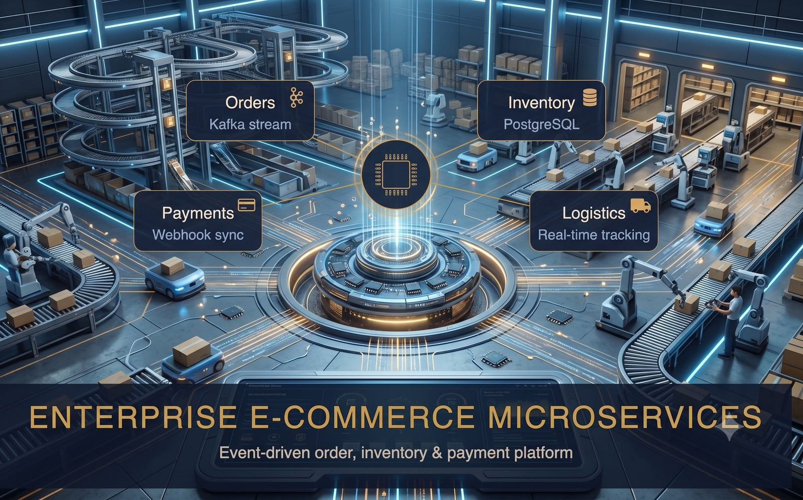

1. Executive Summary & The Monolith Bottleneck
In high-volume e-commerce platforms, checkout is the most critical revenue pathway. In legacy monolithic architectures, when a customer clicks "Place Order", the server attempts to execute everything sequentially:
- Deduct inventory count from database
- Call third-party payment gateway (Stripe/PayPal/Swedbank) synchronously
- Trigger transactional email & SMS delivery
- Notify warehouse fulfillment APIs
If the payment gateway lags by 2 seconds, or the email API times out, the user experiences agonizing spinners and cart abandonment. During flash sales, thousands of simultaneous locks on the inventory table cause severe database deadlocks.
2. The Event-Driven Decoupled Architecture
I redesigned this flow into an asynchronous event-driven microservices topology orchestrated via Apache Kafka topics and RabbitMQ queues:
3. Database Scaling & Connection Management
Node.js asynchronous event loops can spawn thousands of concurrent connection attempts, overwhelming PostgreSQL's maximum connection limit. I implemented PgBouncer in transaction pooling mode, reducing idle database connections from 2,500 down to a stable pool of 100 dedicated connections. Combined with partial indexing on active orders, query execution time dropped by 65%.
4. Production Impact & Results
| Performance Metric | Legacy Synchronous Flow | Event-Driven Kafka Architecture |
|---|---|---|
| Checkout Turnaround | 2,800ms – 4,500ms | 180ms – 320ms (42% Cut on overall checkout flow) |
| Inventory Locking Deadlocks | Frequent under peak sales | Zero Deadlocks (Atomic Redis pre-reservation) |
| Payment Gateway Timeout Impact | Crashed user checkout request | Graceful asynchronous retry via DLQ |
| Order Status Visibility | Manual page refresh required | Live push updates via WebSockets |
Scaling High-Volume E-Commerce or Microservices?
From message queue decoupling to connection pooling and zero-downtime microservices architectures, let's connect.
Contact Chetan Ladumor